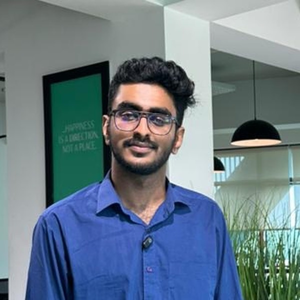

What does it take to build healthcare AI in Kerala?
A conversation with Hanan Kasim, Founder and CEO of Elara Health AI, on pilots, clinical trust and the ecosystem young healthcare founders need.

What Elara is building
Elara Health AI is building an AI-powered copilot for radiology reporting. The problem Hanan set out to solve is a familiar one for radiologists: reporting involves repetitive dictation, transcription and formatting, and all of it takes up valuable clinical time.
Elara is designed to reduce that administrative burden through intelligent AI assistance, so radiologists can spend more of their time on clinical interpretation and patient care. Hanan says the team of nine includes an advisor who is an IIT Kharagpur alumnus, an AI researcher with a PhD from the USA, developers, engineers, doctors, and marketing, scaling and legal expertise.
Hanan's view
Where it gets stuck
The hardest part, he says, is not the technology. It is access to the right clinical ecosystem. Early-stage healthcare startups need chances to work with hospitals, radiologists and healthcare decision-makers. Clinical validation, pilot deployments, institutional trust and access to healthcare infrastructure remain real barriers for founders building healthcare technology.
Building a healthcare startup, in his words, is fundamentally different from building a conventional tech startup. You can have a good idea and still not be able to test it where it matters.
The bridges that need to be built
Early-stage founders need a way into hospitals and radiology departments, to understand real clinical workflows and validate their ideas in practice.
Experienced healthcare leaders who will guide young founders, and a community willing to support experimentation.
One connected community, rather than a series of networking events.
Kerala's potential
Hanan believes Kerala has the clinical talent and the technical potential to build globally competitive healthcare technology companies. What young founders need, he says, is more than networking events: access to hospitals, a real clinical setting to try their ideas in, and mentorship from people who have done it.
Healthcare technology only becomes real when it meets a clinic. That is the gap People of Healthcare exists to close: between young founders who can build, and the hospitals and clinicians who can tell them whether it works. Hanan's story is a clear example of why that bridge matters for Kerala.
Through People of Healthcare, Medinn is building bridges and widening adoption and collaboration between startups and hospitals in Kerala.
Figures and views are Hanan Kasim's own unless stated. Photo supplied for this feature. People of Healthcare is an initiative of Medinn, by Dr. Sidharth Narayanan, House Surgeon, GMC Kozhikode.